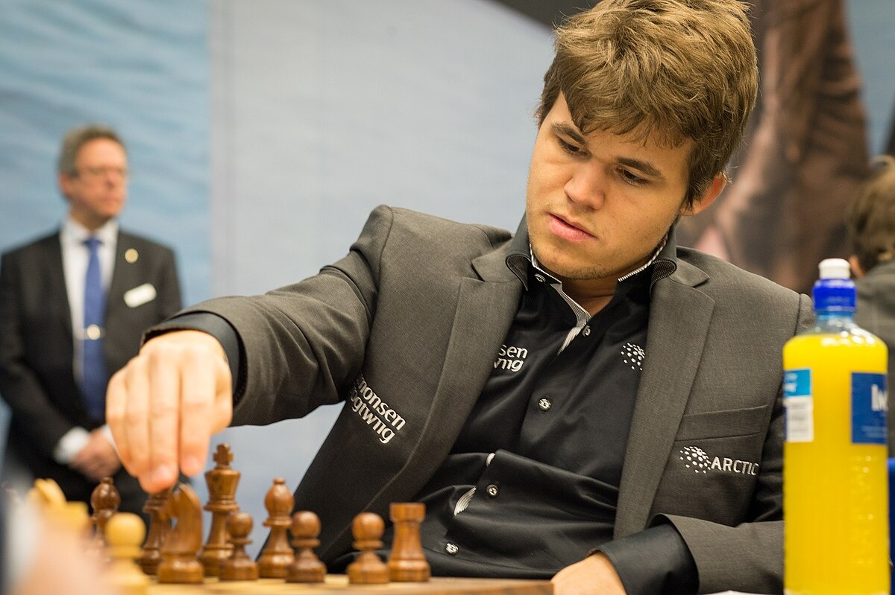
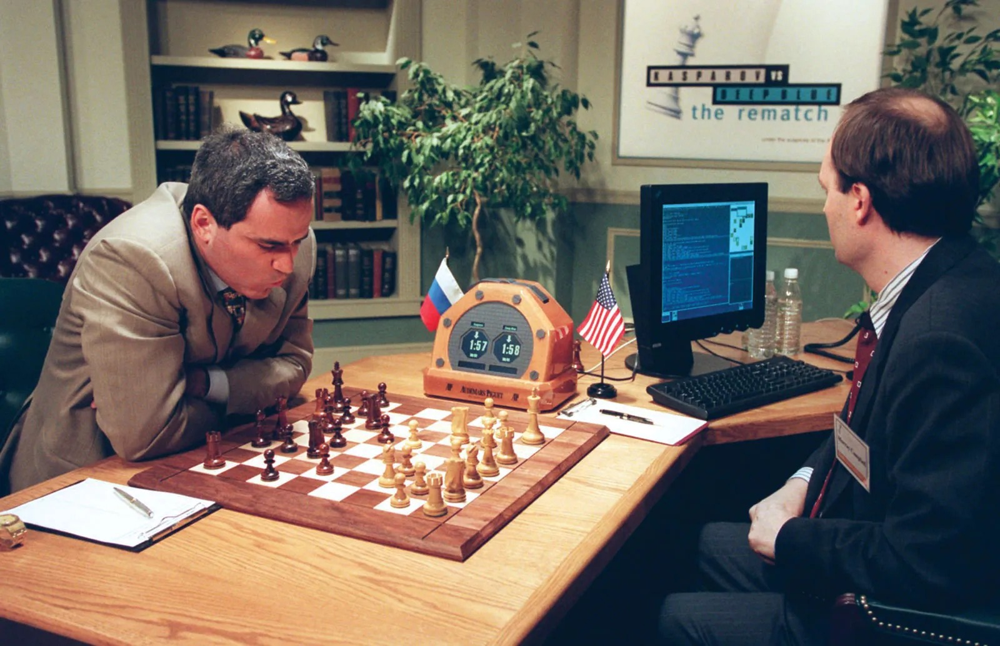
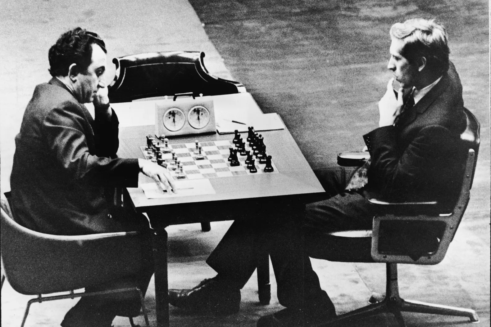
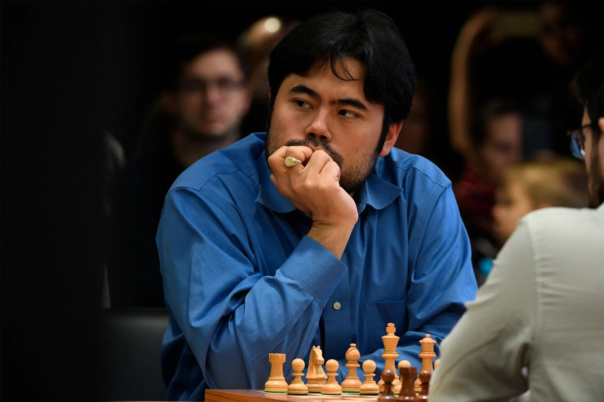
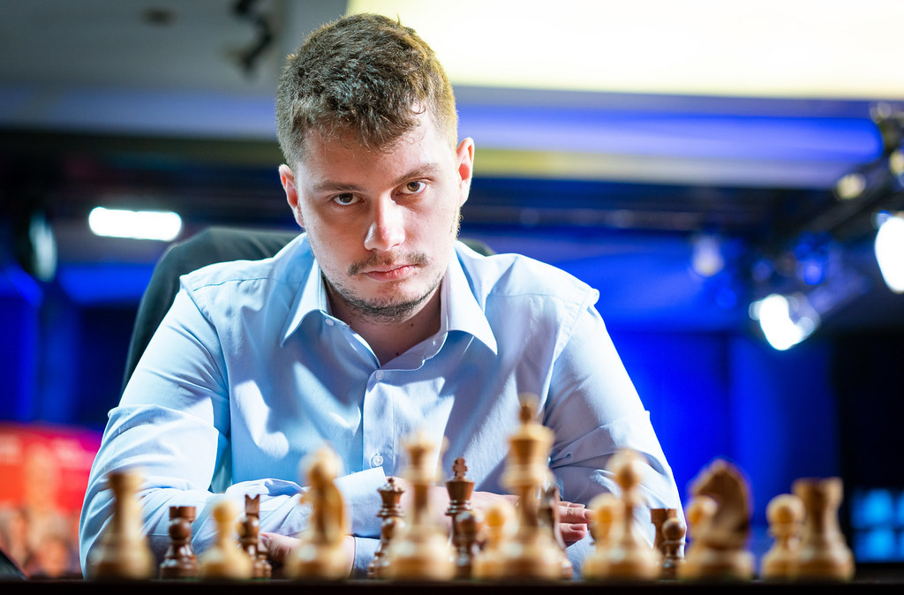

Players
-
Magnus Carlsen
Born in 1990 in Norway, Magnus Carlsen is considered one of the greatest chess players of all time. He became a grandmaster at 13 and won the World Championship for the first time in 2013, defeating Viswanathan Anand.
He defended the title four times over the following years. In 2023, he chose not to defend it again, saying he no longer felt motivated to play another title match.
Between 2018 and 2020, Carlsen played 125 classical games without a loss.

Magnus in 2013, the year he became world champion -
Garry Kasparov
Garry Kasparov had a major influence on modern chess. He worked with teams of analysts, contributed to opening theory, and influenced the way world championship matches were organised.
He became world champion in 1985 at the age of 22, making him the youngest player to win the title at the time. He held it until 2000.
In 1996, Kasparov beat IBM's Deep Blue 4–2. A year later, he faced an improved version of the computer. Deep Blue won the 1997 rematch 3½–2½, becoming the first computer to beat a reigning world chess champion in a match.

Kasparov playing Deep Blue in 1997 -
Bobby Fischer
Bobby Fischer was born on March 9, 1943, in Chicago. He became a grandmaster at 15, the youngest in the world at the time.
Fischer won the U.S. Championship eight times. In one edition, he won all 11 games. In 1972, he defeated Boris Spassky in Reykjavík to become world champion, ending a long period of Soviet dominance.
Fischer also promoted Chess960, a variation in which the pieces on the back rank start in one of 960 possible arrangements. It reduces the importance of memorised openings and gives players room to be creative.

Tigran Petrosian (left) and Bobby Fischer (right) -
Hikaru Nakamura
Hikaru Nakamura is an American player known for his results in classical chess and his skill in online games.
He is a five-time U.S. champion and has spent years among the world's leading players. His fast, creative style is especially well suited to rapid and blitz chess.
Nakamura is also one of the best-known chess streamers. His Twitch broadcasts and success in speed chess have introduced many people to the game.

Hikaru Nakamura -
Bogdan-Daniel Deac
Bogdan-Daniel Deac was born on October 8, 2001, in Râmnicu Vâlcea. His Elo rating reached 2710 in September 2022, placing him among Romania's strongest players.
In 2024, he won the Reykjavík Open with a score of 7½/9.

Bogdan-Daniel Deac